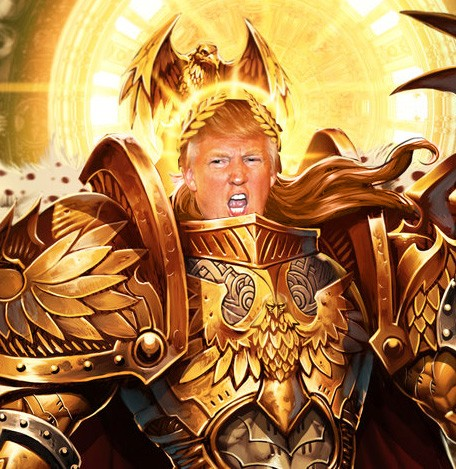

Well, a lot experts answered this question „yes”, relying on their political views. The problem is, that American experts can’t think about Donald Trump without linking him to allegations of his racism, homophobism and chauvinism and, in that case, their opinions are often not impartial, and this leads us to conclusion, that American society is manipulated by the majority of politicians, experts and celebrities. In Europe, especially in western part, Hillary Clinton was tipped to be first Madam President, and after Trump’s victory, the unstoppable wave of hate speech hit his electorate and himself. There have been documented events, such as: destroying cars of Trumps voters, burning office of his supporters and even kidnapping torturing them. All that facts brings us conclusion, if really Trumps supporters were really the “bad” ones? Or maybe the democrats just can’t “bury the hatchet”? Trump was elected in democratic elections, and since the USA is a democracy, everyone there should respect the results of elections, no matter if they like it or not. While democrats are protesting on streets, Trump announced some of his reforms, including sealing the southern borders, focusing on national industry and war with ISIS. Trump has strong electorate in police, army and in low paid workers, which gives him a great opportunity to make his dreams come true, and to make America great again.
